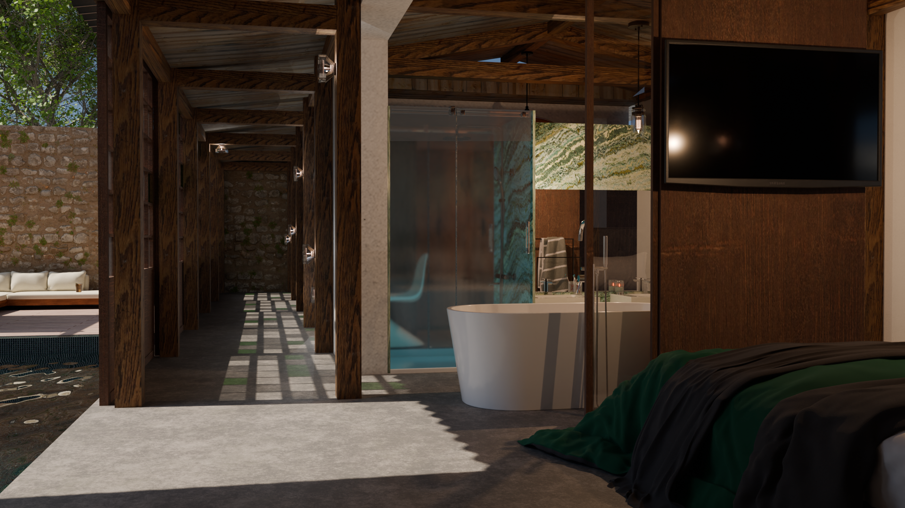

Saint-Marcel, 36200
Outre le travail sur les projections architecturales, cet exercice a permis de développer des compétences techniques en matière de création d’images numériques et de conception d’un permis de construire.
Saint-Marcel, 36200
A former agricultural barn is now home to a family of 4. As well as working on architectural projections, this exercise involved developing technical skills in creating digital images and designing a building permit.
 More infos
More infos
internship
2024
Saint Marcel, France
Supervisor : Isabelle Jouhanneau
 More infos
More infos
Stage en agence
2024
Saint Marcel, France
maître de stage : Isabelle Jouhanneau